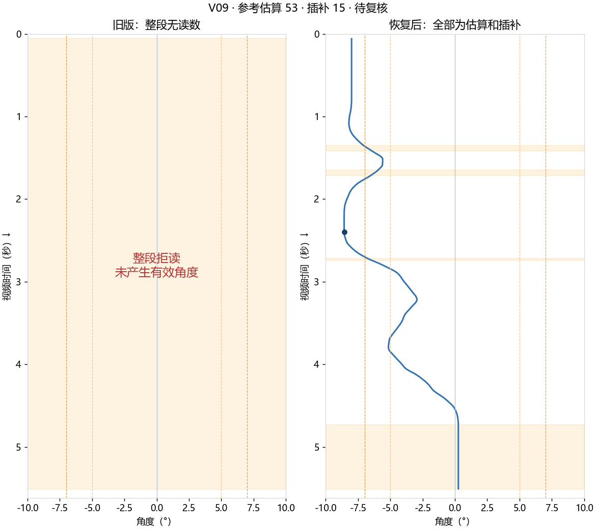
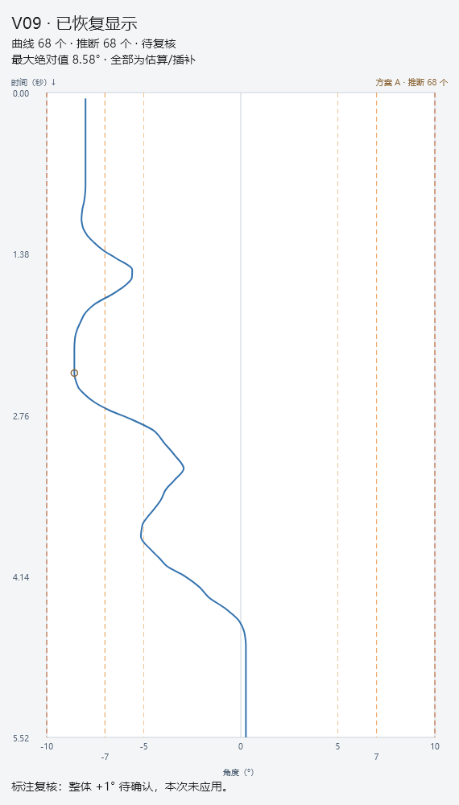
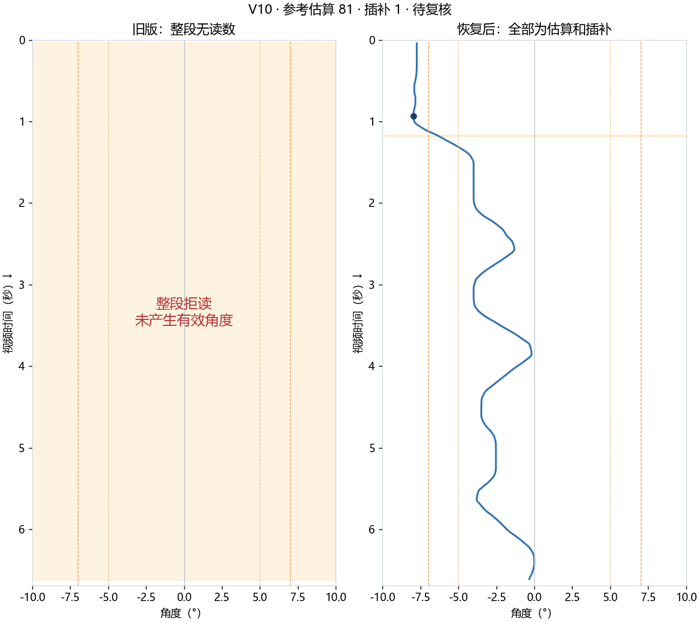
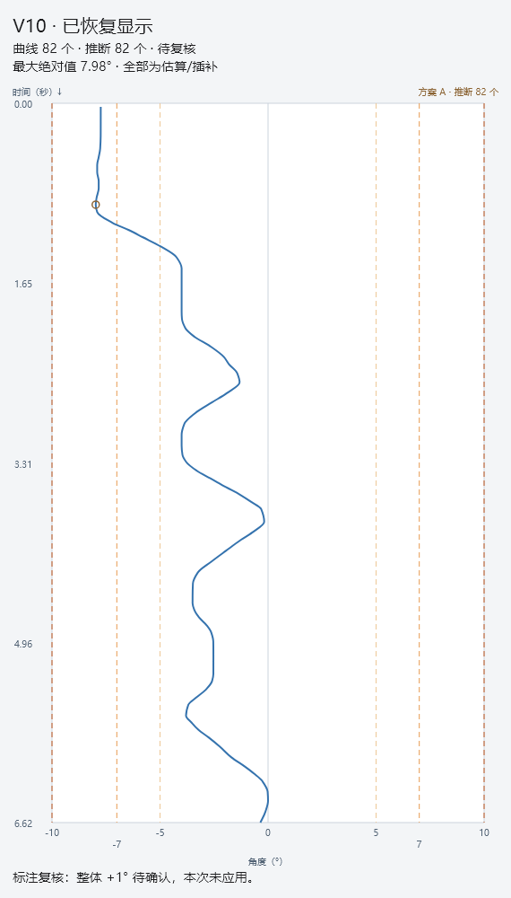

V09 · 已恢复显示
原生参考估算 53 点，方案 A 插补 15 点，最终显示 68/68 点。全部标为推断，结论为待复核。最大绝对值 8.58°。


用户认为标注可能有整体偏差，先记录，尚未改变训练标签、模型参数或现有数值。可在新版本 Excel 的“标注复核备注”查看同一说明。
原先右侧检测选中了图像边界背景块 (1098,81)，导致提前结束。现在对边界背景改用受限的已有参考估算；可信度较低的额外读数明确标为推断，不计入识别成功率。未触及图像边界的候选读点略超过最后标定锚点时可作带标记的端点估算，图像边界本身不作为外推读点。
不是无条件输出数字：严重不匹配帧保留原始空值/原因，再按方案 A 从邻近读数插补。两段均为估算/插补，显示曲线但保持“待复核”，原视频会保留。原来能读的四段数值逐点不变。
| 录像 | 可信原读数 | 原生参考估算 | 后续插补 | 最终显示 | 结论 |
|---|---|---|---|---|---|
| V01 | 0 | 0 | 0 | 0/126 | 待复核 |
| V02 | 0 | 0 | 0 | 0/170 | 待复核 |
| V03 | 0 | 0 | 0 | 0/129 | 待复核 |
| V04 | 0 | 0 | 0 | 0/154 | 待复核 |
| V05 | 179 | 0 | 8 | 187/187 | 超阈值 |
| V06 | 185 | 0 | 2 | 187/187 | 超阈值 |
| V07 | 161 | 0 | 6 | 167/167 | 超阈值 |
| V08 | 130 | 0 | 13 | 143/143 | 超阈值 |
| V09 | 0 | 53 | 15 | 68/68 | 待复核 |
| V10 | 0 | 81 | 1 | 82/82 | 待复核 |
原生参考估算 53 点，方案 A 插补 15 点，最终显示 68/68 点。全部标为推断，结论为待复核。最大绝对值 8.58°。


原生参考估算 81 点，方案 A 插补 1 点，最终显示 82/82 点。全部标为推断，结论为待复核。最大绝对值 7.98°。

